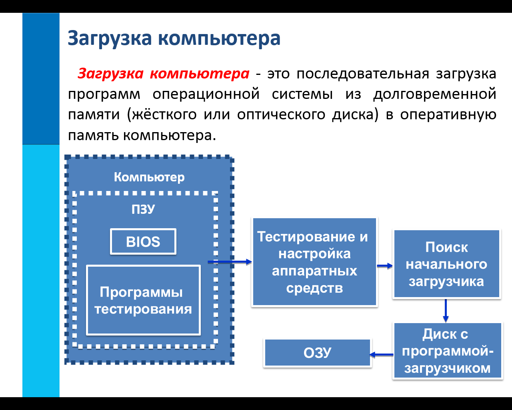

Компьютер – это устройство, не способное мыслить самостоятельно, как человек. Для того чтобы компьютер мог работать с информацией – получать ее, хранить, передавать, обрабатывать – его необходимо научить выполнять все эти действия. Научить – значит построить работу компьютера по инструкции, в которой указано, что надо делать. Такая инструкция должна содержать строгую последовательность команд на языке, понятном компьютеру, т.е. сообщать ему, как надо обрабатывать данные для получения желаемого результата.
Это последовательная загрузка программ операционной системы из долговременной памяти (жёсткого или оптического диска) в оперативную память компьютера
 Компьютер рассматривают как систему- единое целое, состоящее из взаимосвязанных частей: аппаратное обеспечение( технические устройства) и программное обеспечение
Совокупность программ, необходимых для обеспечения функционирования компьютера и обработки данных различных типов.
Это комплекс программ,
обеспечивающих совместное функционирование всех устройств компьютера и
предоставляющих пользователю доступ к ресурсам компьютера.
Операционные системы
распространяются в форме дистрибутивов на
лазерных дисках.
Диск, на котором
установлена операционная система, называется системным.
Наиболее
распространенные операционные системы: Windows, Linux, Mac OS (для компьютеров Macintosh)
(Basic Input Output System) называется так потому, что включает в себя обширный набор программ ввода-вывода, благодаря которым операционная система и прикладные программы могут взаимодействовать с различными устройствами как самого компьютера, так и подключенными к нему. BIOS реализован в виде микросхемы, устан
Это программы, обслуживающие диски
(проверка, дефрагментация, восстановление и т.д.), архиваторы, антивирусные
программы и пр.
Антивирусные программы - для обнаружения и удаления
компьютерных вирусов (Антивирус
Касперского, DoctorWeb, NOD32, Avast, Panda).
Архиваторы - программы для уменьшения объема файлов без потери информации.
Позволяют разбивать файлы большого объема на тома меньшего объема (WinRar, WinZip, 7-Zip, Ark).
Аппаратный
интерфейс- средства, обеспечивающие между компьютером и
устройствами компьютера. Сюда входят драйверы устройств- программы, управляющие
работой подключённых устройств( клавиатура, мыши, мониторы, принтер)
Драйверы внешних устройств - специальные программы для управления внешними
устройствами.
Пользовательский интерфейс-средства,
обеспечивающие взаимодействия человека и компьютера. В операционную систему
входят программы, поддерживающие диалог пользователя с компьютером, чтобы
сделать некоторое действие (запустить программу на выполнение печати,
посмотреть свойства компьютера)